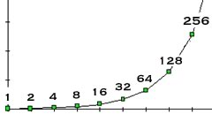
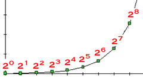
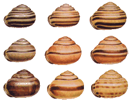

As stated clearly by the Englishman Thomas Malthus (1766-1834), organisms are capable of explosive, exponential increases in numbers.
Figure: Thomas Malthus. Click the image to learn more
A single pair of elephants, breeding in a unlimited manner, and living a normal life-span, would produce ~15,000,000 living descendents at the end of 500 years.
 
Figure: Exponential growth
At this rate, it would not take long for the progeny of our original pair of elephants to produce a mass of descendants larger than that of the earth.
Obviously, exponential growth cannot go on forever, or even for very long.
The total number of organisms at any one time is limited by the resources available (space and food) as well as by predators and disease and, in the case of higher organisms, social factors such as territoriality [link][[link](https://iriss.stanford.edu/sites/all/files/shared/documents/Lopez-Sepulcre2005.pdf)].
In an unperturbed system, population numbers generally oscillate around a steady state (although because of ecological and evolutionary interactions, these steady states may not be completely stable.)
The human population is an interesting example of a system that has escaped one steady state and has yet to find another.
Figure: Population growth predictions for humans. Click the image to watch Hans Rosling's TED talk: Global population growth, box by box
The graph above displays three scenarios of human population growth, based on different levels of average fertility. In a number of countries, the birth rate already falls into the low fertility domain [link].
This decrease in birth rate per women correlates with reductions in infant mortality and increases in the educational level of women. The behavior of humans appears to be somewhat different from that of your “average” animal, plant, or microbe.
Darwin & Wallace: recognizing the significance of genetic variation
In 1858, Charles Darwin and Alfred Wallace published their observations and proposed their idea of evolution by natural selection. Their ideas were based on an apparently simple observation, namely that individual organisms in a population are not identical and that part of this variation is inherited.
If all of the offspring were identical, which ones would survive to reproduce would be a matter of luck, pure and simple. If variation is due to genetic factors, and if variation influences reproductive success, then populations will, of necessity, change (evolve) over time.

Genetic variation has been exploited by plant and animal breeders for thousands of years to generate the various forms of domesticated plants and animals. The process is known as artificial selection.
In artificial selection, the breeder selects the animals with the traits they desire - the offspring that have these traits are mated, those that do not are destroyed.
Over generations organisms with highly exaggerated forms of desired traits can be created.
These organisms may also have other, less desirable traits, which can themselves be the focus of artificial selection (if deemed worthwhile). Because they live in an artificial environment (a farm or as pets), many of these traits can be tolerated, even though they would be quickly selected against in the wild.
During the last century, the mechanisms of heredity have been largely resolved. Genetic information is stored in molecules of DNA. The total genetic information stored in an organism’s DNA is its genotype. This information is read out, through the processes of transcription and translation, to form macromolecules (RNAs and proteins). These macromolecules are major building blocks of cells, and regulate cellular behavior, tissue and organ formation and organismic behavior.
DNA also encodes a second type of information that is involved in determining where, when and how much a gene is expressed, that is, where and when the information the gene encodes is used. Gene expression is regulated by gene products (interacting with DNA sequences) as well as the way the DNA is packaged. Variation in gene expression due to variations in gene packaging is the subject of epigenetics.
Changes in genotype, as well as epigenetic factors, can lead to changes in phenotype, the appearance or behavior of an organism. An organism’s phenotype can have dramatic effects on its reproductive success, that is, how many viable offspring it produces. In evolutioanry terms, the number of viable offspring is a measure of the fitness of an organism.
Mutations and inherited variation
The molecular replication of genetic material is never quite perfect. Complete accuracy requires a very high level of energy expenditure and effort, resources that can often be more profitably used for other tasks.
Consider proof-reading one of your own term papers. If you earn an “A” even if your paper has a few minor grammatical errors in it, is it worth spending extra hours finding and correcting everyone of those errors?
In addition to mutations that occur during replication, DNA molecules can undergo various types of changes, including duplications, deletions, or rearrangements, that change genotype and phenotype.
An important point, which we will return to, is that all of these various types of mutations occur randomly; there is no known mechanism by which the environment (or the organism) can influence which mutations occur. This is sometimes known as the central dogma of molecular biology.
Although it might seem unlikely, mutations can be useful to a population, if not to a particular individual. Mutations produce genetic and phenotypic variation.
Because of mutations (and sex) offspring are genetically distinct from one another and from their parents. With each generation, the population of organisms accumulates more and more different mutations - more and more genetic variation. A similar process occurs during the development and maintenance of an organism (different cells in the body can have different genotypes) and such differences can lead to disease, most dramatically, to cancer.
Sometimes the phenotypic differences associated with a particular genotype are subtle, other times dramatic. Most phenotypes are due to the action of many genes, acting together, but some arise from variations in a single gene. Different versions of a gene are known as alleles of that gene.
Consider this baby (below), born with a mutation in the gene encoding the protein myostatin. It has a mutated myostatin allele.

Myostatin normally acts to suppress the growth of muscle; when myostatin activity is reduced, muscles grow bigger.
Mutations in the myostatin gene lead to either reduced levels or altered forms of the myostatin protein. In humans, a reduced level of myostatin activity causes a child to have muscles that are twice the size of those in a normal child, without exercise!
In cattle (below), a mutation in the myostatin gene is responsible for the “double muscle” phenotype displayed by some breeds.
On the other hand, over-expression of myostatin leads to the loss of muscle observed in AIDS wasting syndrome.
Questions to answer
Questions to ponder
Evolution by Natural Selection:
We might hope for a world of peace, where the lion sits down with the lamb, rather than attempting to eat it.
In the real (natural) world, however, there is almost constant stress due to the presence of predators, pathogens, the search for food, mates and places to live.
These combine to produce a “natural selection” for those organisms that reproduce most successfully, that is those that produce the most offspring that themselves also reproduce (remember our definition of fitness).
Organisms with different phenotypes can differ in their reproductive success in a particular environment.
Over time, the genotypes of the organisms that are the most reproductively successful (the most fit) within a particular environment will become more common within the population.
These genotypes will be selected based on their effects on phenotype, and the phenotype’s impact on the organism’s reproductive success. Genotypes that decrease an organism’s reproductive success compared to other organisms in the population will be selected against and may disappear altogether. Over generations, this process leads to adaptation of organisms to their particular environments or to their extinction.
What is an organism’s environment?
This is a complex question. The answer is determined by the organism’s life-style.
Which parts of the environment matter, in terms of reproductive success (the only thing that natural selection “cares” about), can be quite specific. Organisms can, and often do, avoid competition with other organisms by adapting to very specific and distinct environments and life-styles, often referred to as an ecological niche. There is a principle in evolutionary biology, known as the competitive exclusion principle or Gause’s law, that two species cannot (stably) occupy the same ecological niche.
Some organisms are amazingly specialized. Perhaps the narrowest ecologic niche of all is that of a species of the fungus family Laboulbeniaceae, which grows exclusively on the rear portion of the elytra of the beetle Aphenops cronei, which is found only in some limestone caves in southern France. Larvae of the fly Psilopa petrolei develop in seepages of crude oil in California oilfields; as far as is known they occur nowhere else. – Th. Dobzhansky.
An organism adapted to a particular niche may be more successful than an organism adapted to the general environment. At the same time, as an organism becomes better and better adapted to a specific niche, it becomes more and more dependent on the continued existence of that niche for its survival, if the niche disappears the species is also likely to become extinct.
It is worth noting that evolution is a dynamic process, changes in a population may change selective pressures, that is, which traits are favored. The full complexities of evolutionary processes are clearly beyond this introductory course (You might consider taking my other course, BIO 112!).
Adaptation is rarely perfect.
What evolution can produce is constrained by a number of factors, most importantly the current state of the population. This includes those genotypes already present. Not all phenotypes are accessible from a particular genotype, and even if they are, the cost of attaining “perfection” (if there is such a thing), may not be repaid by the reproductive advantage it provides.

Our ability to choke on food could be considered a serious design flaw, but it reflects the evolutionary path that produced us (and other four legged creatures), a path that led to the crossing of our upper airway (leading to the lungs) and our pharynx (leading to our gastrointestinal systems. That is why food can lodge in the airway, causing choking or death.
It is possible that the costs of a particular “imperfect” design are offset by other advantages. For example, the small but significant possibility of death by choking may, in an evolutionary sense, be worth the ability to make more complex sounds (speech) [link]. (F. Jacob on evolution & tinkering)
As a general rule, evolutionary processes generate structures and behaviors that are as good as they need to be for an organism to effectively exploit a specific set of environmental resources and to compete effectively with its neighbors.
If being better than “good enough” does not enhance reproductive success, it will not be selected for, and variations in that direction will be lost, particularly if they come at the expense of other important processes or abilities.
We see the evidence for the “good enough” character of evolutionary processes all around us. It explains the limitations of our senses, as well as our tendency to get backaches, need hip-replacements, and our susceptibility to diseases and aging [link].
For example, the design of our eyes leaves a blind spot in the retina. Complex eyes have arisen a number of times during the history of life, apparently independently, and not all have a blind spot.
We have adapted to this retinal blind spot through the use of saccadic movements - why, because this is an evolutionarily easier fix to the problem than rebuilding the eye from scratch (which is essentially impossible).
An “intelligently designed” human eye would presumably not have such an obvious design flaw.
Figure: Vertebrate (left) and invertebrate eyes (right)
Over time, organisms that diverge from the optimal rather than the best, however imperfect, solution will be at a selective disadvantage. This process of maintaining an already optimal design is known as conservative selection (which we will discuss further later on)..
Anti-evolution arguments (and scientific responses)
The theory of evolution has been controversial since its inception because it deals with issues of human behavior and origins, our place in the universe, life and its meaning. Its implications can be quite disconcerting [link].

Some people are confused and assume that the goal of science is to provide truth. This is an unwarranted assumption – the TRUTH about the universe may well be unknowable or incomprehensible to us.
That said, science, based on the assumption of naturalism and the process of prediction, validation, and revision, has proven to be quite effective at dealing with a wide range of practical problems, from weather prediction to curing disease.
It provides a method to understand, and often manipulate the world to our benefit.
What does that mean in practice – it means that children who would otherwise die of bacterial or viral infections live; that crop yields can be increased and fewer people starve; that pesticide use can be reduced through genetic engineering; that people can communicate with one another through satellite-transmitted signals; and that much of what happens in the world around us can be understood in a logical and ever more complete and accurate manner.
Questions to answer
Questions to ponder